Day1
外灘の洋館
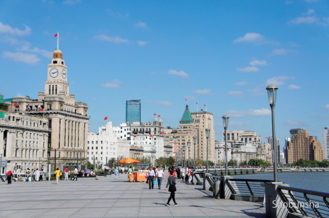黄浦江沿いには租界時代に建てられた洋館がずらりと並ぶ。洋館にはカフェやショップも入っているので、ぜひ館内も鑑賞したい。
所要 60分 予算 300元〜
裏外灘
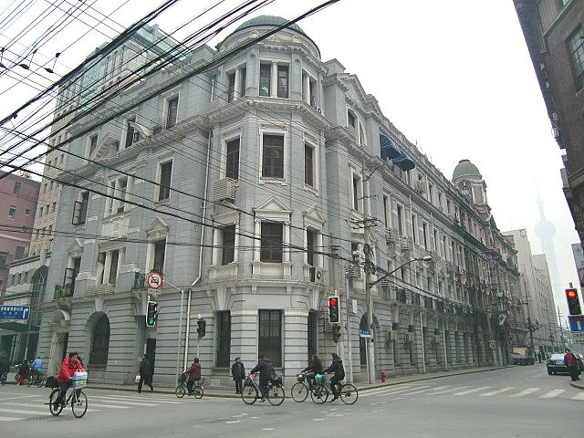メインストリートの裏側には、最新のリノベスポットがいっぱい。
上海料理
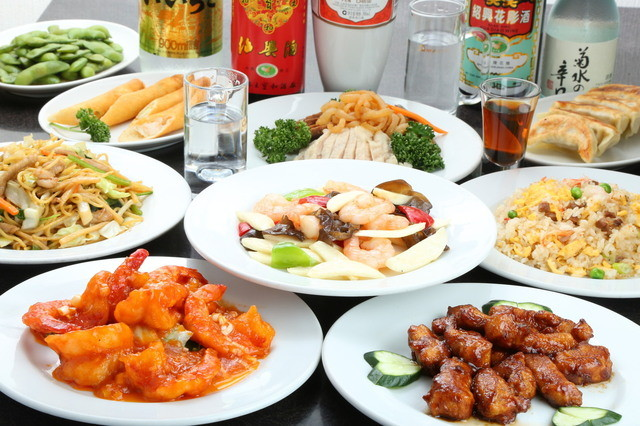市内には上海料理の名店が数え切れないほどある。こってりとした甘辛い味付けがやみつきに。
所要 90分 予算 80元〜
外灘＆浦東の夜景
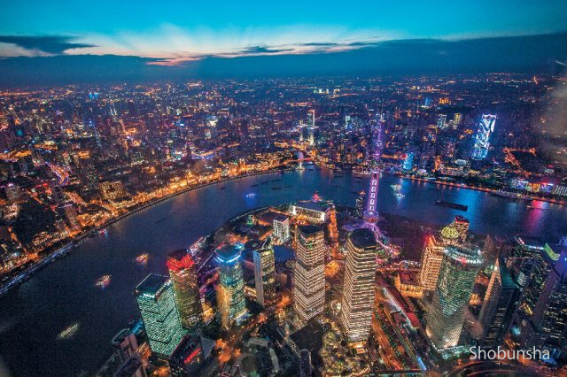外灘の重厚な建物と浦東の洗練された高層ビルの光が夜を鮮やかに彩る。対照的な2つの景色を一度に楽しめるのは上海だからこそ。
所要 120分 予算 80元〜
Day2
上海自然博物館
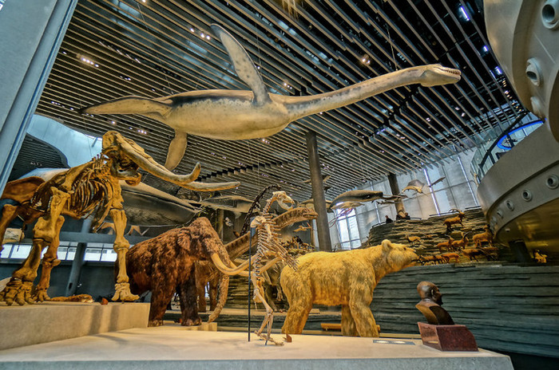生物の歴史や生態を紹介する人気の大型博物館。恐竜の骨格標本や模型は一部動くものもあり迫力満点。
所要 180分 予算 30元〜
グルメストリート呉江路
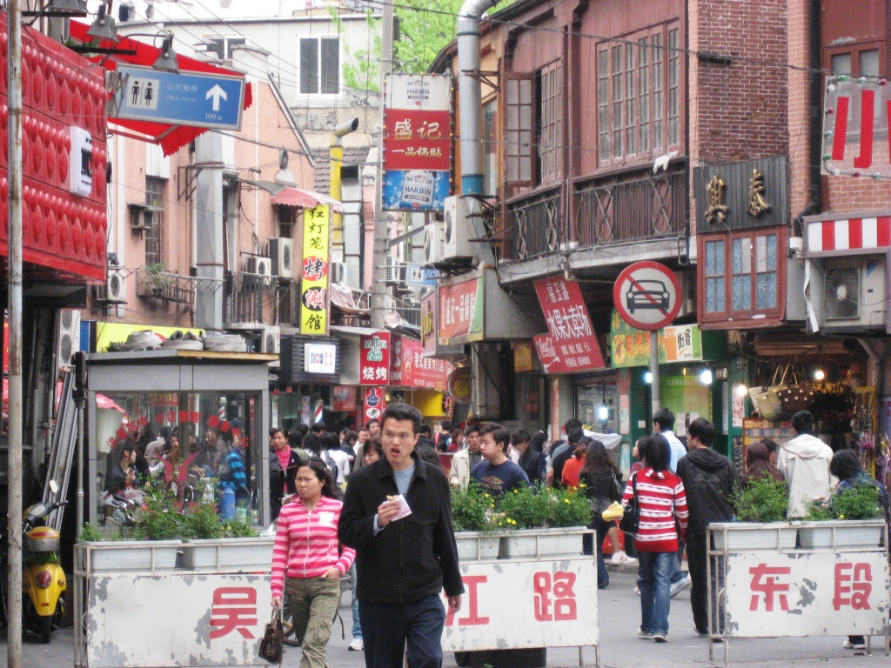小吃店やスイーツなど、人気店が一堂に集結。上海グルメを心ゆくまで満喫!
所要 60分 予算 6元〜
M50で最新アートを鑑賞
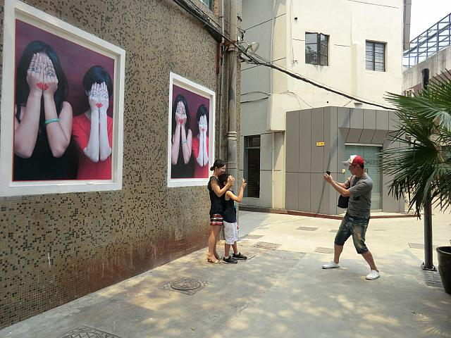古い工場や倉庫を改装した芸術区の一帯には、アトリエやギャラリーがいっぱい。個性豊かな中国のモダンアートに触れてみよう。
所要 90分 予算 無料
上海一の繁華街 南京東路
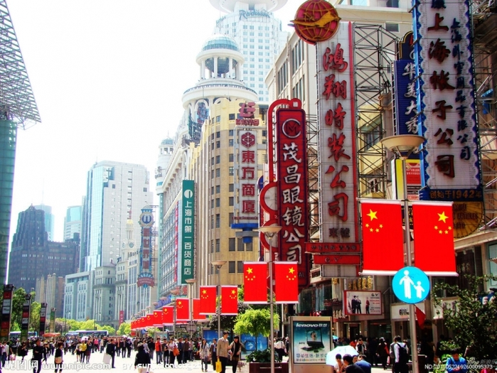人々の熱気に圧倒されつつ、上海の街のパワーを実感しよう。
所要 60分 予算 50元〜
上海蟹
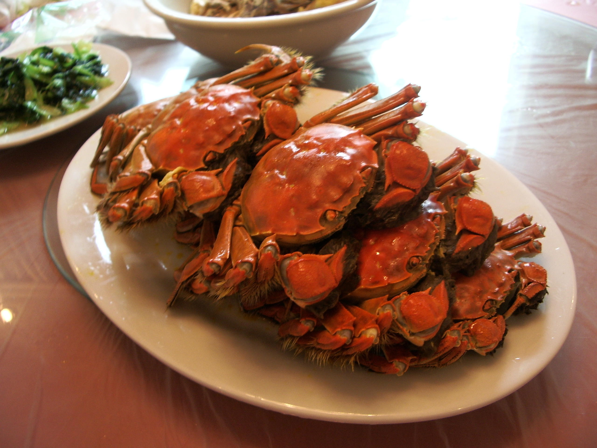夕食は濃厚なカニみそが絶品の上海蟹で決まり。
所要 70分 予算 400元〜
上海雑技団
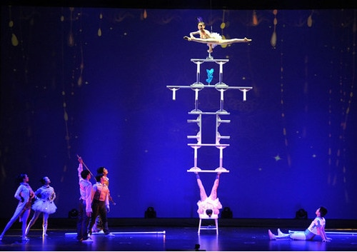人間の限界とも思えるほどの高度な演技を間近で鑑賞。息の合ったアクロバットに拍手喝采!
所要 90分 予算 150〜280元
マッサージ
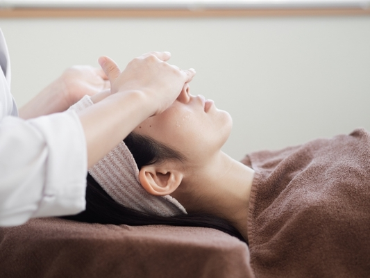街にはお手ごろなマッサージ店がいっぱい。熟練の技に身を委ね、明日に備えよう。
所要 60分 予算 200元〜
Day3
外灘の遊歩道で太極拳に挑戦
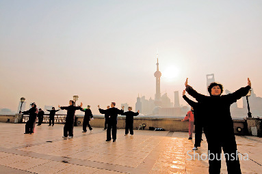早起きして中山東一路の黄浦公園へ。地元の人たちに交じって太極拳にチャレンジ!
所要 60分 予算 無料
虹口
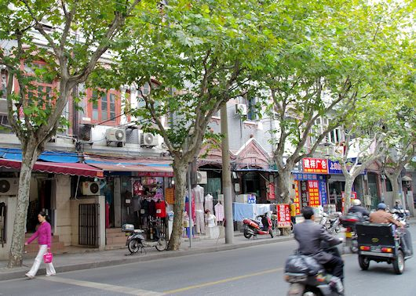太極拳に挑戦したあとは、魯迅ゆかりの地、虹口へ。朝の魯迅公園は散策やダンスなどを楽しむ市民でいっぱい。ここで上海パワーを充電しよう!
所要 60分 予算 無料
多倫路文化名人街を歴史散策
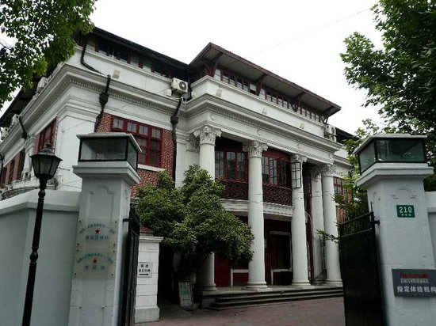魯迅が晩年を過ごしたことで知られるレトロな歴史街。骨董品の店も多いので立ち寄ってみよう。
所要 30分 予算 無料
豫園商城でランチ＆おみやげ探し
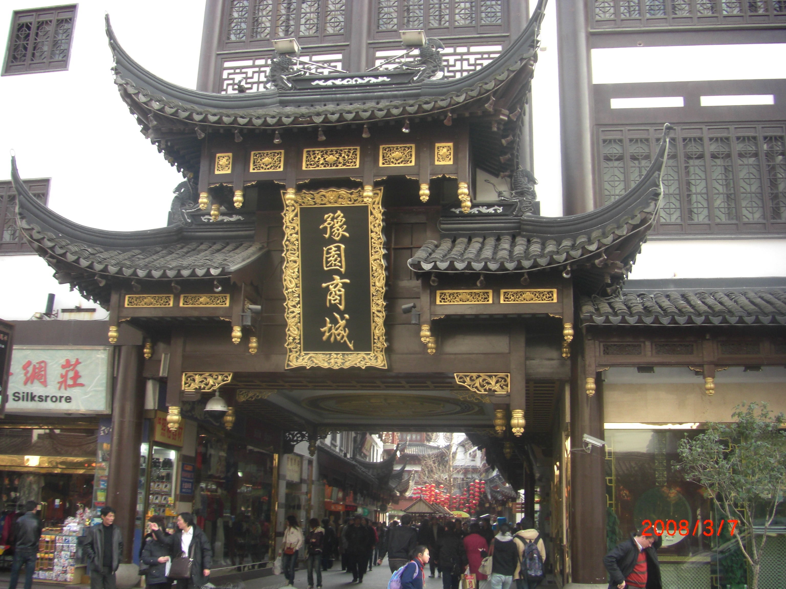魯伝統建築の中に雑貨屋やレストランがぎっしり。グルメは老舗からB級グルメまで幅広い。
所要 80分 予算 60元〜
中国庭園、豫園を鑑賞
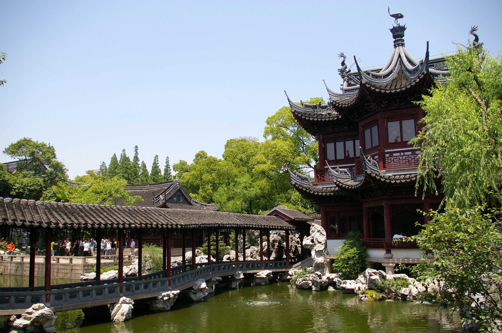上海の観光名所である豫園は、自然いっぱいの明代庭園。変わった形の石や、随所に施された彫刻も必見!
所要 40分 予算 30元〜
歴史ある茶館で中国茶をたしなむ
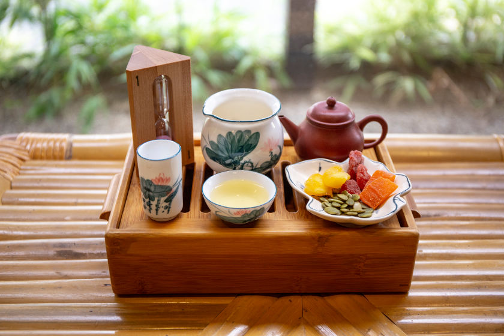レトロな茶館でのんびりと。中国茶の作法も学びたい。
所要 40分 予算 60元〜
路地裏スポット、田子坊で雑貨ハント!
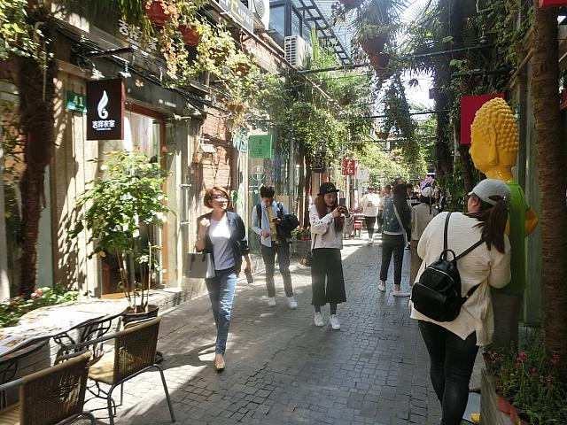張りめぐらされた路地に最新ショップが詰まった田子坊。掘り出し物を見つけよう!
所要 90分 予算 50元〜
洋館レストランでレトロなディナータイム
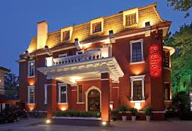租界時代にタイムスリップしたようなレトロな洋館で豪華な夕食をとろう。かつて著名人の邸宅だったところも多い。
所要 90分 予算 250元〜
衡山路で深夜まで遊び尽くす
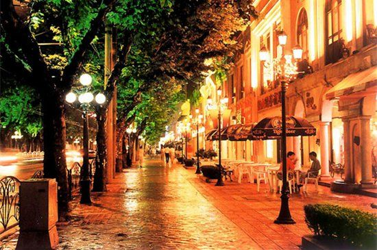夜からがアツい上海の街。とくに衡山路周辺はクラブやバーが多く、開放的な雰囲気。
所要 90分 予算 100元〜
Day4
蘇州麺でお手軽朝ごはん
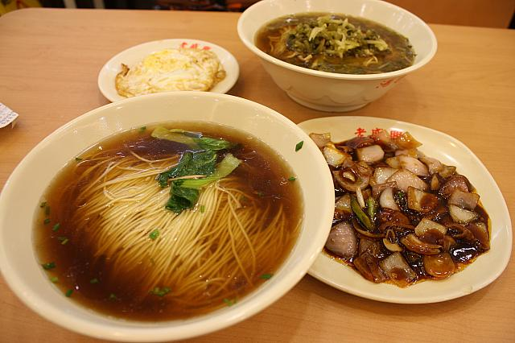上海名物、細麺であっさり味の蘇州麺。地元の人気店でローカルな味を堪能しよう。
所要 40分 予算 20元〜
淮海中路の旧租界エリアを散策
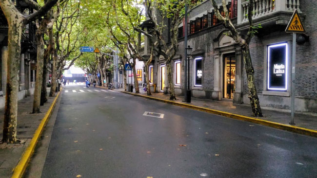周辺はプラタナス並木が続き、老房子がひっそりとたたずむ。歴史散歩を楽しもう。
所要 30分 予算 無料
黄浦江を見ながらランチを
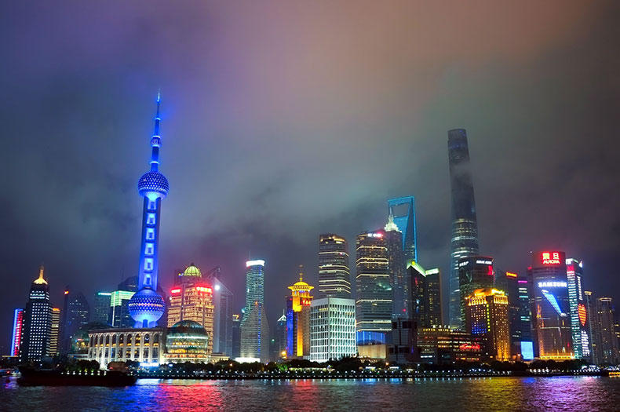外灘の絶景を楽しめる、浜江大道のカフェへ。のんびりと旅の思い出を振り返ろう。
所要 60分 予算 150元〜
東方明珠塔から上海にお別れ
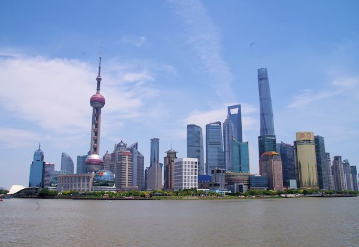心ゆくまで堪能した上海に別れを告げに浦東の展望台へ。眼下に広がる絶景を目に焼き付けたら、いざ空港へ!
所要 30分 予算 160元〜